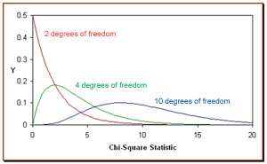
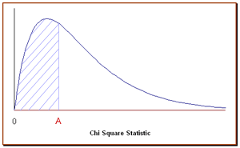

Chi-Square Distribution
The distribution of the chi-square statistic is called the chi-square distribution.
In this lesson, we learn to compute the chi-square statistic and find the probability
associated with the statistic. Chi-square examples illustrate key points.
The Chi-Square Statistic
Suppose we conduct the following
statistical experiment. We select a random sample of size n from
a normal population, having a standard deviation equal to σ.
We find that the standard deviation in our sample is equal to s. Given
these data, we can define a
statistic,
called chi-square,
using the following equation:
Χ2 =
[ ( n - 1 ) * s2 ] / σ2
The distribution of the chi-square statistic is called the chi-square distribution.
The chi-square
distribution is defined by the following
probability density function:
Y = Y0 * ( Χ2
) ( v/2 - 1 ) * e-Χ2
/ 2
where Y0 is a constant that depends on the number of degrees of
freedom, Χ2 is the chi-square statistic,
v = n - 1 is the number of
degrees of freedom, and
e is a constant equal to the base of the
natural logarithm system (approximately 2.71828). Y0 is defined, so
that the area under the chi-square curve is equal to one.
In the figure below, the red curve shows the distribution of chi-square values
computed from all possible samples of size 3, where degrees of freedom is n
- 1 = 3 - 1 = 2. Similarly, the green curve shows the distribution for
samples of size 5 (degrees of freedom equal to 4); and the blue curve, for
samples of size 11 (degrees of freedom equal to 10).

The chi-square distribution has the following properties:
- As the degrees of freedom increase, the chi-square curve approaches
a normal distribution.
Cumulative Probability and the Chi-Square Distribution
The chi-square distribution is constructed so that the total area under the
curve is equal to 1. The area under the curve between 0 and a particular
chi-square value is a
cumulative probability associated with that chi-square value. For example, in
the figure below, the shaded area represents a cumulative probability associated with a
chi-square statistic equal to A;
that is, it is the probability that the value of a
chi-square statistic will fall between 0 and A.

Fortunately, we don't have to compute the area under the curve to find the
probability. The easiest way to find the cumulative probability associated with a
particular chi-square statistic is to use the
Chi-Square
Distribution Calculator, a free tool provided by Stat Trek.
Chi-Square
Distribution Calculator
The Chi-Square Distribution Calculator solves common statistics problems, based
on the chi-square distribution. The calculator computes cumulative
probabilities, based on simple inputs. Clear instructions guide you to an
accurate solution, quickly and easily. If anything is unclear, frequently-asked
questions and sample problems provide straightforward explanations. The
calculator is free. It can be found under the Stat Tables tab,
which appears in the header of every Stat Trek web page.
Test Your Understanding: Chi-Square Examples
Problem 1
The Acme Battery Company has developed a new cell phone battery. On average,
the battery lasts 60 minutes on a single charge. The standard deviation is 4
minutes.
Suppose the manufacturing department runs a quality control test. They randomly
select 7 batteries. The standard deviation of the selected batteries is 6
minutes. What would be the chi-square statistic represented by this test?
Solution
We know the following:
To compute the chi-square statistic, we plug these data in the chi-square
equation, as shown below.
Χ2 =
[ ( n - 1 ) * s2 ] / σ2
Χ2 = [ ( 7 - 1 )
* 62 ] / 42 = 13.5
where Χ2 is the
chi-square statistic, n is the sample size, s is the standard
deviation of the sample, and σ is the standard
deviation of the population.
Problem 2
Let's revisit the problem presented above. The manufacturing department ran a
quality control test, using 7 randomly selected batteries. In their test, the
standard deviation was 6 minutes, which equated to a chi-square statistic of
13.5.
Suppose they repeated the test with a new random sample of 7 batteries. What is
the probability that the standard deviation in the new test would be greater
than 6 minutes?
Solution
We know the following:
Given the degrees of freedom, we can determine the
cumulative probability that the chi-square statistic will fall between 0 and
any positive value. To find the cumulative probability that a chi-square statistic
falls between 0 and 13.5,
we enter the degrees of freedom (6) and the chi-square statistic (13.5) into
the Chi-Square Distribution Calculator.
The calculator displays the cumulative probability: 0.96.
This tells us that the probability that a standard deviation would be less than
or equal to 6 minutes is 0.96. This means (by the
subtraction rule) that the probability that the standard deviation
would be greater than 6 minutes is 1 - 0.96 or .04.